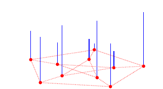
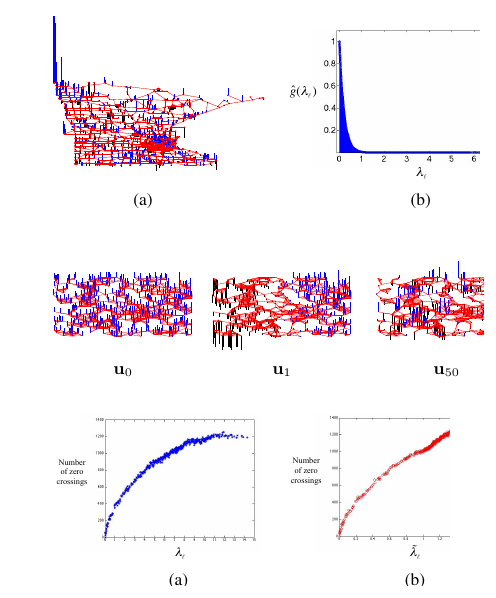
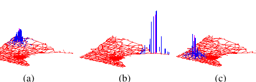
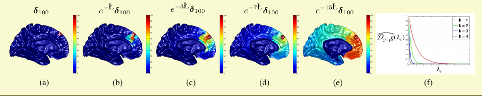
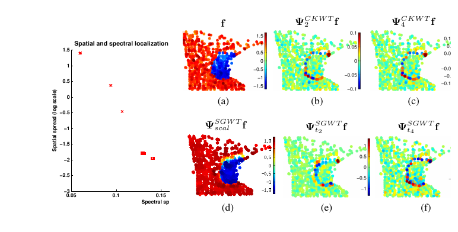
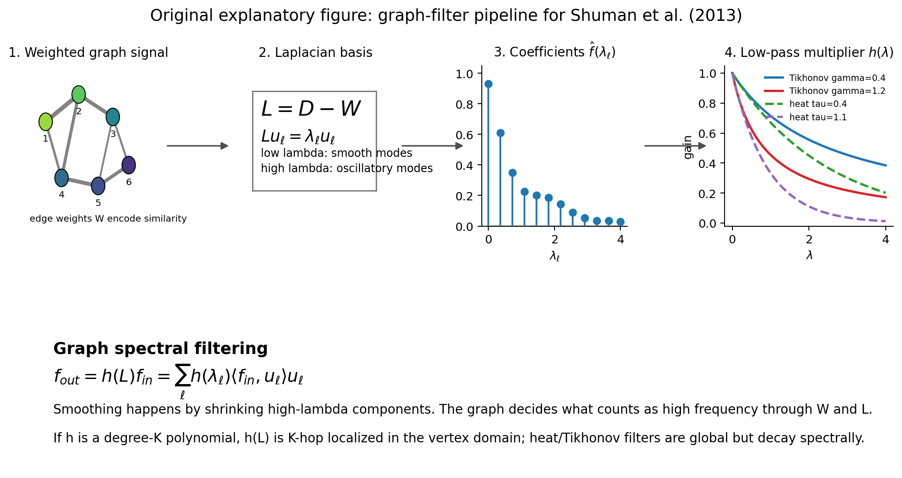

Paper: Shuman, David I.; Narang, Sunil K.; Frossard, Pascal; Ortega,
Antonio; Vandergheynst, Pierre. “The Emerging Field of Signal Processing
on Graphs: Extending High-Dimensional Data Analysis to Networks and
Other Irregular Domains.” arXiv:1211.0053v2, 10 Mar 2013. Reviewer:
Reviewer-P07 Auditor: Auditor-P07 Status: revised after audit Date:
2026-05-15 Source manifest ID: P07 Canonical reading copy:
literature/conductance_kernel_laplacian_review/sources/pdf/P07_shuman_et_al_emerging_field_gsp.pdf
A mathematically capable non-specialist should be comfortable with:
This is a tutorial paper, not a new convergence theorem or a new graph-construction method. Its job is to explain how ordinary signal-processing ideas can be moved from regular grids, such as time series or images, to irregular graph domains. A graph signal is just one number per vertex. The graph says which samples should be treated as nearby or similar.
The central translation is:
\[ \begin{gathered} classical Fourier modes \to graph Laplacian eigenvectors \\ classical frequencies \to graph Laplacian eigenvalues \\ smooth signal \to small changes across high-weight edges \\ low-pass filter \to shrink high-eigenvalue graph-Fourier components \end{gathered} \]
The paper’s main practical point for SIMODS/gflow is that smoothing is not defined by the data vector alone. It is defined by the chosen graph, the edge weights, the Laplacian normalization, and the spectral response \(h(\lambda)\). Changing edge weights changes which signals look smooth. Changing \(h(\lambda)\) changes how much high-frequency graph variation is attenuated.
\([explicit]\) The Abstract on PDF p. 1 says the paper studies high-dimensional data that “reside on the vertices of weighted graphs” in settings such as social, energy, transportation, sensor, and neuronal networks. It frames graph signal processing as a merger of algebraic/spectral graph theory with computational harmonic analysis.
\([explicit]\) Section I, PDF
pp. 1-2, identifies the difficulty: a graph signal with N
vertices and a classical discrete-time signal with N
samples are both vectors in \(\mathbb{R}^{N}\), but classical
signal-processing operations ignore dependencies induced by the
irregular graph domain. The paper names translation, modulation,
downsampling, and coarsening as basic operations that are not automatic
on arbitrary weighted graphs.
\([explicit]\) Section I-A, PDF p. 2, lists four overarching challenges: constructing a weighted graph when the application does not dictate one; incorporating graph structure into localized transforms; preserving useful Euclidean-domain intuition; and developing computationally efficient implementations for high-dimensional graph data.
[contextual] For the conductance/kernel review, this
paper is background infrastructure. It does not solve adaptive-scale
graph construction, but it explains why any edge-weight choice becomes
part of the smoothing operator.
The paper builds a graph spectral calculus around a weighted, undirected, connected graph \(G = {V, E, W}\). It then uses this calculus to define graph Fourier transforms, graph filters, graph translations, graph heat diffusion, and graph wavelets.
The main sequence is:
W, D, and the non-normalized graph
Laplacian \(L = D - W\) (Section II-A
and II-B, PDF p. 3).L as graph Fourier modes and
the eigenvalues as graph frequencies (Section II-C, equations (3)-(4),
PDF p. 3).\([explicit]\) Section II-A, equation (1), PDF p. 3, gives a common graph-construction affinity:
\[ \begin{aligned} W_{ij} &= \\ \exp(-dist(i,j)^2 / (2 \theta^2)) \text{if} dist(i,j) \le kappa \\ 0 \text{otherwise}. \end{aligned} \]
The distance can be a physical distance or a Euclidean distance
between feature vectors. The paper also names
k-nearest-neighbor construction as another common method
(Section II-A, PDF p. 3).
\([explicit]\) Section II-B, PDF p. 3, defines the non-normalized/combinatorial graph Laplacian:
\[ \begin{aligned} L &= D - W, \\ d_{i} &= sum_{j} W_{ij}, \\ (L f)(i) &= sum_{j in N_{i}} W_{ij} [f(i) - f(j)]. \end{aligned} \]
Because L is real symmetric, it has orthonormal
eigenvectors \({u_{l}}\) and
nonnegative eigenvalues \({lambda_{l}}\) with \(L u_{l} = lambda_{l} u_{l}\). For a
connected graph, the paper orders them as \(0
= lambda_{0} < lambda_{1} \le \ldots \le lambda_{N-1} =
lambda_{\max}\) (Section II-B, PDF p. 3).
\([explicit]\) Section II-C, equation (3), PDF p. 3, defines the graph Fourier transform:
\[ \begin{aligned} f_{hat}(lambda_{l}) &= <f, u_{l}> = sum_{i=1}^N f(i) u_{l}^\,(i). \end{aligned} \]
\([explicit]\) Section II-C, equation (4), PDF p. 3, gives the inverse graph Fourier transform:
\[ \begin{aligned} f(i) &= sum_{l=0}^{N-1} f_{hat}(lambda_{l}) u_{l}(i). \end{aligned} \]
\([explicit]\) Section II-C, PDF p. 3, interprets graph frequency: low-eigenvalue eigenvectors vary slowly across high-weight edges; high-eigenvalue eigenvectors oscillate more rapidly and have more sign changes across edges. Figure 2 and Figure 3 on PDF p. 4 visualize this with random sensor-network eigenvectors and zero-crossing counts.
\([explicit]\) Section II-E, PDF p. 4, defines an edge derivative with edge weight inside a square root:
\[ \begin{aligned} partial f / partial e at i &= \sqrt(W_{ij}) [f(j) - f(i)]. \end{aligned} \]
The local variation is therefore small when neighboring vertices connected by large weights have similar signal values.
\([explicit]\) Section II-E,
equation (5), PDF p. 5, defines the graph p-Dirichlet
form:
\[ \begin{aligned} S_{p}(f) &= (1/p) sum_{i} \Vert grad_{i} f\Vert _2^p \\ &= (1/p) sum_{i} [sum_{j in N_{i}} W_{ij} (f(j)-f(i))^2]^{p/2}. \end{aligned} \]
\([explicit]\) Section II-E, equation (6), PDF p. 5, specializes to the graph Laplacian quadratic form:
\[ \begin{aligned} S_{2}(f) &= sum_{(i,j) in E} W_{ij} [f(j)-f(i)]^2 = f^T L f. \end{aligned} \]
This is the core smoothness penalty: high-weight edges penalize jumps more strongly.
\([explicit]\) Section II-E,
equations (7)-(8), PDF p. 5, gives the Rayleigh quotient
characterization of Laplacian eigenvalues. The lth
eigenvector minimizes \(f^T L f\)
subject to unit norm and orthogonality to previous eigenvectors,
explaining why low eigenvalues correspond to smoother modes.
\([explicit]\) Section II-F, PDF pp. 5-6, describes alternatives: the normalized Laplacian \(L_{tilde} = D^{-1/2} L D^{-1/2}\), the random-walk matrix \(P = D^{-1} W\), and the asymmetric Laplacian \(L_{a} = I_{N} - P\). The paper states there is not a clear answer for when to use the normalized Laplacian, non-normalized Laplacian, or another basis.
\([explicit]\) Section III-A, equation (12), PDF p. 6, defines graph spectral filtering:
\[ \begin{aligned} f_hat_out(lambda_{l}) &= f_hat_in(lambda_{l}) h_{hat}(lambda_{l}). \end{aligned} \]
\([explicit]\) Section III-A, equations (13)-(14), PDF p. 6, writes the same operation as:
\[ \begin{aligned} f_{out}(i) &= sum_{l=0}^{N-1} f_hat_in(lambda_{l}) h_{hat}(lambda_{l}) u_{l}(i), \\ f_{out} &= h_{hat}(L) f_{in} \end{aligned} \]
with \(h_{hat}(L) = U diag(h_{hat}(lambda_{0}), \ldots, h_{hat}(lambda_{N-1})) U^T\).
\([explicit]\) Section III-A, equation (15), PDF p. 6, gives a graph-regularized inverse-problem template:
\[ \begin{gathered} min_{f} \Vert f - y\Vert _2^2 + gamma S_{p}(f). \end{gathered} \]
\([explicit]\) Example 2, equations (16)-(17), PDF p. 7, gives Tikhonov graph denoising:
\[ \begin{aligned} argmin_{f} \Vert f - y\Vert _2^2 + gamma f^T L f, \\ f_\,(i) &= sum_{l=0}^{N-1} [1 / (1 + gamma lambda_{l})] y_{hat}(lambda_{l}) u_{l}(i). \end{aligned} \]
The corresponding filter \(h_{hat}(\lambda) = 1 / (1 + gamma \lambda)\) is explicitly called a low-pass filter.
\([explicit]\) Section III-A, equation (18), PDF p. 6, defines localized vertex-domain filtering:
\[ \begin{aligned} f_{out}(i) &= b_{ii} f_{in}(i) + sum_{j in N(i,K)} b_{ij} f_{in}(j). \end{aligned} \]
\([explicit]\) Section III-A,
equation (19), PDF p. 7, shows that if the spectral filter \(h_{hat}(\lambda)\) is a
degree-K polynomial, then \(h_{hat}(L)\) can be written exactly as a
K-hop localized vertex-domain filter because \((L^k)_{ij} = 0\) when graph shortest-path
distance \(d_{G}(i,j) > k\).
\([explicit]\) Section III-B, equation (20), PDF p. 8, defines graph convolution as spectral multiplication:
\[ \begin{aligned} (f \, h)(i) &= sum_{l} f_{hat}(lambda_{l}) h_{hat}(lambda_{l}) u_{l}(i). \end{aligned} \]
\([explicit]\) Section III-C,
equation (21), PDF p. 8, defines generalized translation of a spectral
kernel to a vertex n:
\[ \begin{aligned} (T_{n} g)(i) &= \sqrt(N) sum_{l} g_{hat}(lambda_{l}) u_{l}^\,(n) u_{l}(i). \end{aligned} \]
\([explicit]\) Example 3, PDF p. 9,
defines heat diffusion with \(R =
\exp(-L)\) and powers \(\mathbb{R}^{tau} f = \exp(-tau L) f\). It
says the heat flow rates are proportional to edge weights encoded in
L, and that increasing tau makes the filtered
value at i depend on vertices farther away in the
graph.
The paper is a tutorial, so its figures are mostly conceptual examples rather than benchmark experiments.
\([explicit]\) Figure 1, PDF p. 1, shows a positive graph signal on the Petersen graph, using bars at vertices. It establishes the basic visual idea: a graph signal is one sample per vertex.

\([explicit]\) Figure 2, PDF p. 4, shows graph Laplacian eigenvectors \(u_{0}\), \(u_{1}\), and \(u_{50}\) on a random sensor-network graph. The constant \(u_{0}\), smooth Fiedler vector \(u_{1}\), and oscillatory \(u_{50}\) support the frequency interpretation of Laplacian eigenvalues.

\([explicit]\) Figure 3, PDF p. 4, plots zero-crossing counts for non-normalized and normalized Laplacian eigenvectors. Larger eigenvalues generally have more zero crossings, reinforcing the “higher lambda = higher graph frequency” rule.
\([explicit]\) Figure 4, PDF p. 4, shows a signal on the Minnesota road graph and its graph spectral representation. The caption states that the signal is a heat kernel defined directly in the spectral domain by \(g_{hat}(lambda_{l}) = \exp(-5 lambda_{l})\), then transformed back with equation (4).
\([explicit]\) Example 1, PDF p. 5, plots the same signal on three unweighted graphs with the same vertices but different edges. The graph spectral content and quadratic form values change: \(f^T L_{1} f = 0.14\), \(f^T L_{2} f = 1.31\), and \(f^T L_{3} f = 1.81\). This is the paper’s clearest visual proof that smoothness is graph-dependent.
\([explicit]\) Example 2, PDF p. 7, denoises the cameraman image using (a) ordinary Gaussian low-pass filters and (b) a graph spectral filter based on a semi-local pixel graph. The graph connects horizontal, vertical, and diagonal neighbors but sets Gaussian weights from noisy pixel-value differences using equation (1), with \(\theta = 0.1\), \(kappa = 0\), and Tikhonov filter parameter \(gamma = 10\). The graph filter smooths less across image edges because the graph Laplacian encodes those image-edge similarities.
\([explicit]\) Figure 5, PDF p. 8, translates the heat kernel from Figure 4 to three different vertices on the Minnesota graph. It illustrates that smooth spectral kernels produce localized translated vertex-domain kernels, even though graph translation is not a classical shift.

\([explicit]\) Example 3, PDF p. 9, shows heat diffusion on a cerebral cortex graph. Starting from a delta at vertex 100, the displays show \(\exp(-L) delta_{100}\), \(\exp(-3L) delta_{100}\), \(\exp(-7L) delta_{100}\), and \(\exp(-15L) delta_{100}\), plus the corresponding dilated heat kernels. This figure is directly relevant to smoothing semantics because it visualizes increasing filter scale.

\([explicit]\) Figure 6, PDF p. 12, compares spatial and spectral spreads for two graph wavelet transforms on random 5-regular graphs. It is evidence that graph transforms have a spatial/spectral localization tradeoff, though the authors caution in footnote 7 on PDF p. 10 that these spread definitions are heuristic.

\([explicit]\) Figure 7, PDF p. 12, shows a piecewise smooth signal with a sharp discontinuity on the unweighted Minnesota graph, plus CKWT and SGWT coefficients. High-magnitude coefficients cluster near the discontinuity, demonstrating spatial localization of high-pass information.
\([explicit]\) The paper claims the graph Laplacian eigenbasis supplies a usable graph spectral domain (Section II-C, equations (3)-(4), PDF p. 3), with eigenvalues functioning as graph frequencies.
\([explicit]\) It claims smoothness is defined relative to graph structure, not only signal values (Section II-E, equations (5)-(6), PDF pp. 4-5; Example 1, PDF p. 5).
\([explicit]\) It claims graph spectral filters generalize classical frequency filters after a graph Fourier basis is fixed (Section III-A, equations (12)-(14), PDF p. 6).
\([explicit]\) It claims graph low-pass filtering can be equivalent to solving graph-regularized inverse problems such as denoising and inpainting (Section III-A, equation (15), PDF p. 6; Example 2, equations (16)-(17), PDF p. 7).
\([explicit]\) It claims polynomial graph spectral filters are exactly localized in the vertex domain up to the polynomial degree in graph-hop distance (Section III-A, equation (19), PDF p. 7).
[contextual] The paper does not claim that a particular
graph construction is optimal. In Section V-A, PDF p. 12, the first open
issue is that graph construction is extremely important and relatively
little is known about how it affects localized multiscale
transforms.
\([explicit]\) Section II-F, PDF p. 6, says there is not a clear answer for when to use the normalized Laplacian eigenvectors, the non-normalized Laplacian eigenvectors, or another basis.
\([explicit]\) Section V-A, PDF pp. 12-13, lists graph construction, Laplacian-basis choice, vertex-domain distance choice, scalable computation, approximation theory, and localization theory as open issues.
\([explicit]\) Section V-B, PDF p. 13, says the described framework focuses on static signals on static, weighted, undirected graphs. Extensions include directed graphs, time series at each vertex, and time-varying graphs.
\([explicit]\) Section V-A, PDF p. 13, notes that most transforms require graph Laplacian eigenvectors, but explicit eigendecomposition is not practical for extremely large graphs. Polynomial approximations and Krylov methods are mentioned as partial remedies.
[contextual] The paper is not a conductance-selection
paper, not an adaptive bandwidth theory paper, and not a graph Laplacian
convergence paper. It should be cited for graph signal smoothing
semantics, not for guarantees that a given kernel recovers a manifold
operator.
[contextual] P07 is a good bridge citation for
introducing graph signal processing to readers who know spectral graph
theory, semi-supervised learning, or manifold learning but do not know
signal-processing language. It collects the basic GFT/filter/wavelet
vocabulary in one place and explains why edge weights, Laplacian
normalization, and spectral response functions matter.
[contextual] For SIMODS, the most important
methodological contribution is not a new kernel formula. It is the
operator viewpoint: after a graph is chosen, a smoother is a spectral
function h(L), and the graph determines what “low
frequency” means.
\([explicit]\) The only graph-affinity formula presented as a common construction is the thresholded Gaussian edge weight in Section II-A, equation (1), PDF p. 3:
\[ \begin{aligned} W_{ij} &= \exp(-dist(i,j)^2 / (2 \theta^2)) \text{if} dist(i,j) \le kappa, \\ W_{ij} &= 0 \text{otherwise}. \end{aligned} \]
The paper says dist(i,j) may be physical distance or
Euclidean feature-vector distance, and that feature-space distances are
especially common in graph-based semi-supervised learning.
\([explicit]\) Section II-A, PDF
p. 3, also names k-nearest-neighbor graph construction as a
common alternative, but does not give a new kNN weighting
formula.
[derived] In a standard electrical-network or
graph-Laplacian smoother interpretation, \(W_{ij}\) is conductance-like: larger \(W_{ij}\) creates stronger coupling and a
larger penalty for f(i) - f(j) in \(f^T L f\). The paper itself calls these
entries edge weights or similarities, not gflow conductances.
\([explicit]\) Example 2, PDF p. 7, instantiates equation (1) for image denoising by taking graph edges between nearby pixels and setting distances to noisy pixel-value differences. This makes strong conductance/similarity inside image regions and weak conductance across image edges.
\([explicit]\) The primary operator is the non-normalized graph Laplacian \(L = D - W\), Section II-B, PDF p. 3.
\([explicit]\) The normalized graph Laplacian \(L_{tilde} = D^{-1/2} L D^{-1/2}\) is presented in Section II-F, PDF p. 5.
\([explicit]\) The random walk matrix \(P = D^{-1} W\) and asymmetric Laplacian \(L_{a} = I_{N} - P\) are described in Section II-F, PDF p. 6.
\([explicit]\) The heat diffusion operator is \(R = \exp(-L)\), and powers \(\mathbb{R}^{tau} f = \exp(-tau L) f\) diffuse a graph signal over time/scale (Example 3, PDF p. 9).
\([explicit]\) The paper lists filtering, denoising, inpainting, compression, storage, communication, analysis, visualization, and multiscale transform design as graph-signal tasks (Abstract and Section I, PDF pp. 1-2).
\([explicit]\) Example 2, PDF p. 7, demonstrates image denoising by graph low-pass filtering.
\([explicit]\) Section IV, PDF pp. 10-12, surveys localized multiscale transforms and graph wavelets for analyzing graph signals.
[contextual] For gflow/SIMODS, the closest task analogue
is graph signal smoothing or graph regression: choose a graph and use a
low-pass operator to reconstruct smooth feature signals.
\([explicit]\) Abstract, PDF p. 1: define graph spectral domains analogous to the classical frequency domain and incorporate irregular graph structure when processing signals on graphs.
\([explicit]\) Section I, PDF p. 1: common tasks include filtering, denoising, inpainting, and compressing graph signals.
\([explicit]\) Section I-A, PDF p. 2: graph construction is one of the overarching challenges when the graph is not directly dictated by the application.
\([explicit]\) Section III-A, PDF p. 6: graph spectral filtering can implement discrete versions of Gaussian smoothing, bilateral filtering, total variation filtering, anisotropic diffusion, and non-local means.
\([explicit]\) Section V-A, PDF p. 12: graph construction is extremely important and insufficiently understood for localized multiscale graph transforms.
[derived] For SIMODS non-oracle selection, the paper
motivates evaluating candidate graphs by how well biologically or
geometrically meaningful signals become low-frequency/smooth on the
graph. This is derived from Example 1 and the \(f^T L f\) smoothness framework, not stated
as a graph-selection criterion.
[derived] For planned length/kernel-conductance
comparators, the paper motivates comparing how different edge-weight
rules alter the Laplacian spectrum and low-pass filter output. This is
derived from equations (1), (6), and (12)-(17).
[derived] For auditor review, the paper motivates
reporting the exact smoothing response \(h(\lambda)\), not just the graph
construction. Two smoothers using the same graph but different \(h(\lambda)\) can behave differently.
\([explicit]\) Larger edge weights force low-frequency eigenvectors to take similar values at adjacent vertices (Section II-C, PDF p. 3). Larger eigenvalues correspond to more rapid oscillation and more zero crossings (Figures 2-3, PDF p. 4).
\([explicit]\) The Laplacian quadratic form \(f^T L f\) is small when high-weight adjacent vertices have similar signal values (equation (6), PDF p. 5).
\([explicit]\) A low-pass filter such as \(h(\lambda)=1/(1+gamma \lambda)\) shrinks high-\(\lambda\) graph Fourier components and preserves low-\(\lambda\) components (Example 2, equation (17), PDF p. 7).
\([explicit]\) Heat filtering \(\exp(-tau L)\) diffuses a signal farther
across the graph as tau increases (Example 3, PDF
p. 9).
[derived] Increasing an edge weight can make signal
jumps across that edge more expensive and can alter the
eigenvectors/eigenvalues that define frequency. Thus, kernel/conductance
design is upstream of smoothing behavior.
\([explicit]\) The paper presents
fixed global Gaussian parameters theta and
kappa in equation (1), plus k-nearest-neighbor
construction as a common alternative (Section II-A, PDF p. 3). It does
not develop local bandwidth, self-tuned kernels, or adaptive-radius
theory.
[contextual] The paper supports adaptive-scale
construction only at the level of motivation: since graph construction
is an open and important issue (Section V-A, PDF p. 12), local-scale
choices should be documented because they change the graph spectral
domain.
[derived] If an adaptive-scale kernel changes \(W_{ij}\), then all quantities in P07
downstream of W change: D, L,
eigenvectors, eigenvalues, \(f^T L f\),
graph Fourier coefficients, and the output of h(L)f.
\([explicit]\) It does not claim a best Laplacian normalization. Section II-F, PDF p. 6, explicitly says the choice is unclear.
\([explicit]\) It does not solve graph construction. Section V-A, PDF p. 12, lists graph construction effects as an open issue.
[contextual] It does not prove convergence of graph
Laplacians to continuum Laplace-Beltrami operators; it cites that
literature in footnote 5 on PDF p. 4.
[contextual] It does not define current
gflow overlap-density smoothing, Riemannian-complex edge
masses, or SIMODS graph-selection criteria.
[contextual] It does not say that a graph low-pass
smoother is automatically a metric-length smoother. The smoother follows
the chosen W, L, and \(h(\lambda)\).
P07 is a semantics paper for graph smoothers. It should be used to
explain that a graph-spectral smoother is a low-pass filter
h(L) whose meaning depends on the graph Laplacian and edge
weights.
Keep this separate from current gflow overlap-density
smoothing. In current project notes, precomputed
weight.list values are positive edge lengths used for
neighborhood ordering/truncation, while the current mass-symmetrized
spectral path uses overlap-density/Riemannian-complex edge masses with
conductance \(c_{e}^\rho = 1/\max(rho_{1}(e),
1e-10)\). P07’s \(W_{ij}\) is a
generic graph-signal-processing affinity/conductance matrix, not
evidence that current fit.rdgraph.regression() uses length
conductance \(1/(ell_{e} +
\epsilon)\).
For planned length/kernel-conductance comparators, P07 gives the right operator vocabulary:
W from
edge lengths, for example \(c_{e} = 1/(ell_{e}
+ \epsilon)\), then use \(L = D -
W\) and a low-pass response such as heat or Tikhonov.L, spectrum,
and smoother.The strongest P07 bridge to SIMODS is Example 1: the same signal can be smooth or rough depending on graph structure. That is exactly why non-oracle graph selection via signal smoothness can be meaningful, but also why it is not the same thing as oracle geodesic recovery.
Reproduced cropped figure panels for Figures 1–7 and Example 3 are
managed by paper_figure_screenshots.yml and embedded in the
generated HTML memo next to the primary figure descriptions. These are
internal-review cropped figure panels from the canonical reading copy,
not manuscript-ready reused figures.
Created:
literature/conductance_kernel_laplacian_review/figures/P07_graph_filter_pipeline.png
This original figure illustrates the P07 graph-filter pipeline: edge
weights define L, L defines
eigenmodes/eigenvalues, the graph Fourier transform represents the input
in that basis, and a low-pass response such as \(1/(1+gamma \lambda)\) or \(\exp(-tau \lambda)\) produces smoothed
output. It is based on Section II-B through III-A, especially equations
(3)-(4), (12)-(14), and Example 2 equation (17).

| Claim | Label | Source reference | Notes |
|---|---|---|---|
| Graph signals are samples on vertices of a weighted graph. | explicit | Abstract and Section I, PDF p. 1; Figure 1 | Basic object of the paper. |
| Edge weights often represent similarity and may be physical or inferred from data. | explicit | Section I, PDF p. 1; Section II-A, PDF p. 3 | Key conductance/affinity bridge. |
| Thresholded Gaussian edge weights are a common construction. | explicit | Eq. (1), Section II-A, PDF p. 3 | theta bandwidth and kappa cutoff. |
| The non-normalized graph Laplacian is \(L=D-W\). | explicit | Section II-B, PDF p. 3 | Primary operator. |
The graph Fourier transform expands f in Laplacian
eigenvectors. |
explicit | Eq. (3), Section II-C, PDF p. 3 | Core GFT definition. |
| The inverse graph Fourier transform reconstructs from graph Fourier coefficients. | explicit | Eq. (4), Section II-C, PDF p. 3 | Basis expansion. |
| Low eigenvalues correspond to smooth eigenvectors over high-weight edges. | explicit | Section II-C, PDF p. 3; Figures 2-3, PDF p. 4 | Frequency interpretation. |
| Graph smoothness is measured by weighted edge differences. | explicit | Edge derivative, PDF p. 4; Eq. (5), PDF p. 5 | Weight enters as \(W_{ij}\). |
| \(f^T L f = sum_{edges} W_{ij} (f(j)-f(i))^2\). | explicit | Eq. (6), PDF p. 5 | Smoothness penalty. |
| The same signal can have different spectral content on different graphs. | explicit | Example 1, PDF p. 5 | Central for graph selection. |
| Normalized and non-normalized Laplacian bases are both possible, with no universally clear choice. | explicit | Section II-F, PDF pp. 5-6 | Important limitation. |
| Graph spectral filtering multiplies \(f_{hat}(lambda_{l})\) by \(h_{hat}(lambda_{l})\). | explicit | Eq. (12), Section III-A, PDF p. 6 | Filter definition. |
| \(h_{hat}(L)=U diag(h_{hat}(lambda_{l})) U^T\) is the matrix-function form. | explicit | Eq. (14), PDF p. 6 | Practical smoother semantics. |
| Tikhonov graph smoothing has response \(1/(1+gamma \lambda)\). | explicit | Example 2, Eqs. (16)-(17), PDF p. 7 | Low-pass filter. |
Polynomial spectral filters are K-hop localized in
vertex space. |
explicit | Eq. (19), PDF p. 7 | Locality result. |
Heat diffusion is \(\exp(-tau L)f\)
and spreads farther as tau increases. |
explicit | Example 3, PDF p. 9 | Heat-kernel smoother semantics. |
| P07 motivates but does not solve graph construction. | explicit | Section V-A, PDF p. 12 | Open issue. |
| P07 supports planned length/kernel-conductance comparators but is not current gflow overlap-density smoothing. | derived | Whole paper plus project notes | P07 defines generic W, not gflow \(rho_{1}\) edge masses. |
gflow overlap-density
conductance so readers do not infer that existing
weight.list lengths are used as \(W_{ij}\)?Auditor-P07 requested a caveat around Example 2’s \(\kappa=0\). Do not treat it as an unambiguous reusable thresholded-Gaussian recipe for SIMODS; cite it only as an example of graph-weight construction in the paper.
P07 should be cited primarily for graph-spectral smoother semantics: graph Fourier basis, spectral response, graph filters, and low-pass interpretation. Use it only secondarily for graph-construction background.
Any comparator discussion derived from P07 should name the actual filter response \(h(\lambda)\), such as heat, Tikhonov, polynomial, or idealized low-pass response.
When discussing individual eigenvectors, note that bases inside repeated or nearly repeated eigenspaces are not unique; the invariant object is the subspace/filter action.
2026-05-15: Drafted by Reviewer-P07 from the canonical P07 PDF. Rendered and visually inspected the full 14-page PDF, including Figures 1-7 and Examples 1-3. Created one original graph-filter pipeline figure.